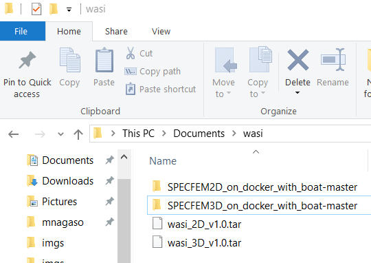

Installation and configuration¶
How to setup this library on your computer.¶
This library is developed for a use with Docker system, thus firstly a few configuration of the system are required only for Windows 10 users.Users of other operating systems e.g. may skip the step 0 below and may start from step 1.
0. Initial configration for docker. (only for Windows)¶
Windows need to be configured as following the official reference. Here is a summary.
- At first visualization technology (VTx) need to be enabled from BIOS setup menu.
- Then after Hyper-V needs to be enabled also.
1. Install Docker¶
Download and install Docker (or Docker-ce for Windows) in your computer. Download link and instructions can be found here depending on your OS type.It is necessary to create an user account of Docker site.During the installation, please DO NOT check the option to use windows container.
2. Install Gmsh¶
From here download the gmsh executable. After extraction, place the gmsh executable in somewhere you prefere.
3. Import docker image or build it from initial¶
In this step, user prepare the docker image, which is the pre-composed linux environment with all dependencies of linux libraries and python modules.
For this way, users need to have two files,
wasi_2D_v1.0.tar
SPECFEM2D_on_windows_with_boat-master.zip
Please contact to Masaru NAGASO mnsaru22@gmail.com to obtain these files.
After obtaining these files, user needs to start docker engine (refering the first section of this page).
Locate the file path wasi_2D_v1.0.tar and wasi_3D_v1.0.tar.
Next, extract SPECFEM2D_on_docker_with_boat-master.zip and SPECFEM3D_on_docker_with_boat-master.zip need to be extracted in somewhere.
For example, this document continues assuming the positions of two files are in ThisPC\Documents\wasi as,
Open power shell window and navigate to the place where wasi_2D_v1.0.tar and wasi_3D_v1.0.tar are placed with the command below:
cd Documents/wasi
Run the docker command below on a powershell to load the docker image into user’s docker environment.
docker load -i wasi_2D_v1.0.tar
docker load -i wasi_3D_v1.0.tar
Now all the environment for making a simulation with toolbox-wasi is set.
Explanation on how to start WASI is described in Tutorial page.